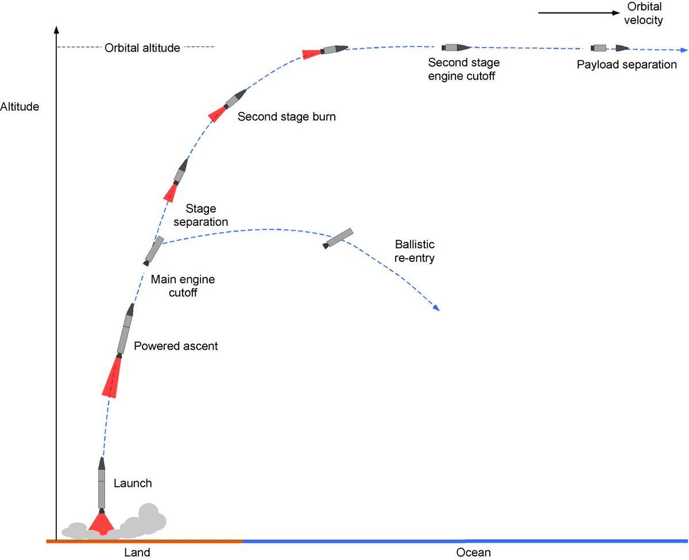
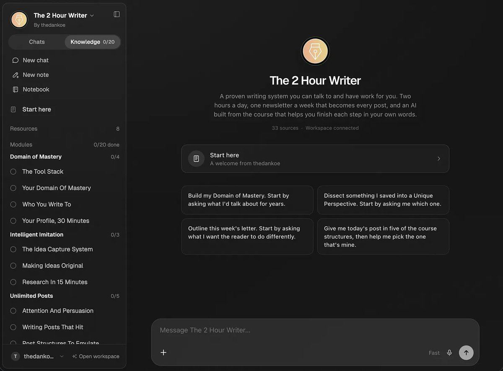

原题：How to become disgustingly self-disciplined
作者：Dan Koe（@thedankoe） | 发布：2026-09-20（北京时间；原始时间戳为 2026-09-19 17:24 UTC） | 原文：https://x.com/thedankoe/status/2101361833940791607
译注：【配图】为原文配图位置。第二节标题原文"You aren't disciplined because you aren't the person who doesn't view it as discipline"含双重否定，按语义译出。"Make it so easy succeed"缺"to"，按语义译。文末大段 Eden 数字产品推广照译保留。
告诉我，这听起来是不是很熟悉。
你想改变你的人生。
真的非常想。
你厌倦了你现在的处境。你厌倦了你的体格，或者你的心智不是你的朋友，或者每个月都得为付不起账单而焦虑，或者担心自己最终会孤独一人。
你终于有了动力，开始去健身房、开始做生意、开始和更多人交谈，你懂的。
快进 2–4 周，什么都没变。
你甚至不知道是怎么发生的……你就这样回到了旧生活里，毫无进展。
而这不是第一次。你全力以赴，然后掉队，再全力以赴，再掉队，10 年过去了（对有些人来说，是一辈子过去了），你都没有打破做最差的自己这一习惯。
这很糟糕。
就好像你从来没有尝试过改变。
因为，嗯，坦白说，你确实没有。
你并没有真正尝试。
那你该怎么办？
如果你看看那些顶尖运动员、创业公司创始人、远见者和战略家，他们似乎一天工作 16 小时都不出一滴汗，你觉得他们做这些很挣扎吗？
还是说那就是他们想做的事？
这对他们来说真的很难吗？不。事实上，让他们去做普通人做的事才极其困难。哪怕只是感觉到自己正在退化成一种平庸的生活，对他们来说都是人间地狱。
为什么？因为那就是他们。
我们如何在自己的生活中复制这一点？
系好安全带。
接下来会有点颠簸。
对你所处的位置厌恶到别无选择、只能赢

火箭在发射和加速阶段会用掉总质量的 85% 到 90% 作为燃料，而一旦达到轨道速度或逃逸速度，滑行则不需要任何燃料。
换句话说，让你启动的东西，并不是让你持续前进的东西。
这是反直觉的，正如生活中大多数真理一样，但如果你想要可持续的改变，你就必须靠蛮力闯进去。
这是第一阶段。
发射燃料。动力、痛苦、一次胜利、一次失败，或者一股意志力的迸发。某种把你发射进一段高强度改变期的东西。
在我的人生中，有很多次我使用了我所谓的"战术性压力"。
举个例子，我搬进一套我负担不起的公寓，这样我就被迫让我的生意成功到足以负担它，否则我就会无家可归。当然我不会真的无家可归，但我相信我会。我这么做过好几次，这是我找到的最好的单一"生意增长秘籍"。它听起来很极端，而这正是重点。它不适合所有人，只适合那些相信自己的人。
大约 5 年前，我每隔两个月左右就会故意去参加锐舞派对、喝酒、狂欢，作为我过度优化的生活方式中的一个故障。我也很享受这么做。它是对系统的一次小小的冲击。第二天早上，你猜得到，我会感觉糟透了。我感觉到自己在生意和健康上的进展在下滑，而由于这些目标对我很重要，我通常会在第二天早上醒来，带着重燃的动力，尽我所能地全力冲刺。
这引出了我找到的第二强效的燃料，那就是对我不想过的那种生活的强烈厌恶。这是几乎任何想改变的人都可以利用的东西。带着严重的宿醉醒来是一种方式（如果你确实有一个让宿醉成为坏事的目标的话），但如果那不是你的菜，还有另一种方式。
这一整周，我希望你做下面这件事：
观察社会，看看大多数人最终落到了哪里。那不好看。通常是破产、超重、和一个他们渐渐憎恨的人结了婚，并淹没在财务责任中——这些责任利用了他们的处境，让他们几乎不可能脱身。这是普通人生活的默认终局。谢谢你，熵。
如果想这件事想一周都没能在你肚子里点起一把火（每次我想到它都会点燃我），下一个选择就是干脆放任自己，直到痛苦大到你再也不想经历那种生活。
对很多人来说，那并不遥远。问题在于他们麻痹了痛苦。他们把它塞到脑海深处，因为直面它太痛苦了。
如果你能直面它一周，那就够了。
但既然我们有了发射燃料，我们到底要如何把它变成可持续的东西？
你之所以不自律，是因为你还不是那个根本不把它当作"自律"的人
在我们历史的这个节点上，一个人应该有可能构建出一个自我，它不只是生物驱力和文化习惯的产物，而是一个有意识的、个人的创造。
——米哈里·契克森米哈赖
我求你理解这一点。
你觉得埃隆·马斯克醒来时会赖在床上，害怕面对接下来的一天吗？你觉得他会按 5 次贪睡键，梦想着不用去上班吗？
你觉得阿诺德·施瓦辛格得骗自己才能健康饮食、一天训练两次吗？
你觉得这种级别的高绩效者会认为做难事很"难"（按你理解的那种意思）吗？还是说他们热爱它？
那只是他们做的事。它是自动的。
如果我激光般专注于一个目标，比如在达到宏量营养素目标的同时减重，一顿麦当劳欺骗餐在我听来并不美味。它听起来他妈的恶心。你得把我从椅子上撬起来，我才会去舔一口双层芝士四分之一磅汉堡。要我吃平庸的食物，需要极大的自律。
我知道这听起来很做作，但对我来说，减掉 10–20 磅要比对一个满脑子想着下次什么时候能泡进油脂里的人容易得多。
无法理解这一点的人接着会说："你为什么不找点乐子！放松点！"作为一种保护自己身份的防御机制，但他们不明白的是，我现在获得的乐趣，比跟你一起在 15 分钟内吃掉一整天的热量配额、然后陷入食物昏迷、在剩下的一天里像树懒一样瘫着要多得多。是啊，真好玩！
追求自己的潜力，你是谁与你想成为谁之间几乎没有差距——这是世界上最美好的感受之一。你活在心流状态里，活在一个电子游戏里，接下一连串你选择接受的有挑战性的任务，并为此获得丰厚的奖励。也许不是以金钱的形式，而是洞见、经验和来自现实的直接反馈。
但身份改变是如此抽象。
你看不见你的身份。
它不像生意，有金钱这样直接而迅速的反馈机制——如果你没赚到钱，现实就在告诉你你做错了什么；如果你在赚钱，现实就在告诉你在营收方面你正处在该在的位置。
那我们该怎么办？我们如何把肮脏的发射燃料变成一个可持续的系统，最终让它成为"我就是这样的人"？
给我 10 分钟，我让你看看如何成为一个全新的人
你应该更关心你当前的轨迹，而不是你当前的结果。
——詹姆斯·克利尔
你是你反复所做之事的统计总和。
而你所做的事，不只是你做出的那些实际决定。
你是流经你的一切的累积结果，双向的，输入和输出。
输入 = 你接触到的一切。你读的每一本书。你一瞥而过的每一条帖子。你称之为朋友的每一个人。你的父母和老师在你还没来得及同意之前就植入的每一个信念。你为了了解时事而读的新闻。你无意中听到的对话。你远远观看其生活的那些人。
输出 = 你在世界上产出的一切。你的决定、行动、作品和工作。没人看着时你做什么，所有人都看着时你做什么。
这确确实实就是整个等式。
输入塑造那个感知情境、做出决定的心智。输出塑造那个呈现下一个输入的生活。它会复利。
要改变我们是谁，我们必须改变这股信息与行动的流。
对于输入，规则很简单。
策展并保护你的心智每天接触的一切。你必须让自己沉浸在与你想成为的人相匹配的刺激中，让过去的那个人挨饿。旧的你必须死去。
有些人看到下面的内容可能会想："哦，我早就知道了。"或者"这只是基础的自我提升。"
但如果你真的知道，你就不会处在这种境地了，不是吗？把它当作"基础"一笔勾销，会让你看不到这一切有多简单。你并不特别，你也不需要什么新奇的东西来改变你的人生。你需要的是在人类存在的整个历史中都被证明有效的东西。
第一，选择你的信息饮食。
大多数人都是智识肥胖的。取关、静音、退订任何降低你标准或浪费你注意力的东西。关注和阅读那些提升它的人和想法。你的社交时间线和其他任何环境一样是一个环境。你生活在其中，它影响着你。
第二，选择你身边的人。
他们的价值观、恐惧，以及关于什么是正常、什么是可能的假设，会渗入你，即使你认为不会。这是最难的部分。你可以试着带上你的朋友一起，但帮助那些不想被帮助的人是极其困难的。
第三，审问你的心智，找出那些不服务于你的信念。
你关于金钱、你这辈子配得到什么、什么是可能实现的大部分信念，在你还没听懂自己所说的语言之前就已经确定了。如果你还没有意识到这些信念，那它们大概就没有改变过。你无法改变你没有审视过的东西。
第四，把被动消费换成主动消费。
快速读十条帖子和慢慢读一本书之间的差别是巨大的。我打赌你连昨天读过的社交帖子中的 2 条都说不出来。但一个改变人生的 YouTube 视频、播客、书的某一章，或者一篇由热爱自己所做之事的人用心创作的 Substack 文章，会留在你心里，并让你变得更好。
让成功容易到你失败了都会显得很蠢
我忘了提一件重要的事。
这是改变的第二阶段。
第一阶段是发射。你知道的，用一种肮脏的燃料获得最初做出改变的动力。因为坦白说，没有它，你大概不会改变你的输入，你也无法冲破大气层、靠我们即将创建的可持续系统滑行。
你的输出，即决定和行动，以一个四部分的反馈回路发生：
环境 → 信号 → 行为 → 回报
这本质上就是 B.F. 斯金纳操作性条件反射中的习惯回路，后来被查尔斯·杜希格（《习惯的力量》）和詹姆斯·克利尔（《掌控习惯》）普及。
提示 → 反应 → 奖励，是教科书式的行为心理学。它有效。
第一步，是让想要的输出成为阻力最小的路径，让不想要的输出变得极其不方便。
第二步，是创建一个触发器，或者说信号，启动那个通向想要输出的行为，最好是每天一次。
第三步，是把成功降低到输出的最小可识别版本（不是一次很棒的训练，而是踏进健身房）。
第四步，是奖励。在行为之后立刻给出某种令人享受的东西，每一次都如此，直到行为本身成为奖励。
这个反馈回路最好用例子来说明：
目标 1 = 在健身房增肌。
首先，你策展你的输入。关注两到三个灵感和教育来源，让你的信息流在你做出这个改变时提醒你的目标。取关那些贩卖不安全感、接受平庸的健身内容。让身边至少有一个已经在训练的人，因为他们的正常会变成你的正常。审视那些被植入你的、关于你的身体和你能做到什么的信念。
然后设计你的输出。
环境——前一天晚上把衣服准备好，从柜子里清掉所有垃圾食品，研究明天训练要做的动作，这样你会有清晰感，或许还有一点去尝试它们的兴奋。
信号——每天在同一时间去。对我来说，那个时间是上午 11 点左右。如果你刚开始，在那个时间设一个闹钟，并把闹钟设成一个代表去健身房的独特铃声。
行为——到场，只向自己承诺做最低限度的事。一组高强度的组。既然你已经在那里了，你很可能会想继续。
奖励——在当地的奶昔店，甚至加油站停一下，买一杯蛋白奶昔。这是我刚开始时的奖励。当然，它们对你大概没那么好，但从大局看，你追求的终局远远超过它造成的任何小伤害。
目标 2 = 把你的兴趣或写作变成一门生意
我们在这里经常谈这个，所以它是一个值得举的例子。
输入——关注你想效仿的创作者和那些能磨砺你想法的思想家。断绝其他一切，让你的算法成为灵感的来源。阅读那些已经实现了你想要之物的人写的书和长篇内容，他们就是你的导师。建立一个由正在做同样事情的人组成的新的线上朋友圈——你大概可以在这篇文章的评论区遇到他们。审视你关于金钱的信念：你是否相信钱很难赚，以及财富创造是运气还是技能。
环境——把你的想法捕捉应用作为快捷方式加到手机上。把你的写作/定时发布应用开着，让文章、帖子和通讯自己写出来。把你最高优先级、杠杆最高、最难的任务集中放在早上。https://app.eden.so/ai/product-builder https://eden.so/（译注：原文第一个链接带有一长串跟踪参数，此处略去参数。）
信号——早上在书桌前的第一杯咖啡，一首用来开启写作时段的特定歌曲，诸如此类，但永远不要只依赖灵感作为创作的信号。
行为——发布最低限度必要的内容量。每天一条帖子，每周一封通讯，质量达到最低标准即可。你只需要让它发出去，不需要它完美或出色。坚持既能跑赢品味，也能创造品味。
奖励——对我来说，我喜欢散步。我总是想待在户外。一旦我在早上完成了 2–3 件主要优先事项，散步就是我的奖励。对你来说，可能是记录一个连续打卡并看着数字上涨。吃早餐（我也喜欢在工作时"禁食"，虽然时间不够长，算不上间歇性断食。有助于专注）。
我想你明白了。
发射火箭。对你的人生处境变得极度受鼓舞，或者极度厌恶。无论你靠哪种燃料茁壮成长，只要被导向有意义的事，两种都不坏。
别浪费那美妙而强效的燃料。用它来创建系统。让行为变得自动化，最终它会成为"我就是这么做的"。
最后，如果最后那个例子让你有共鸣，你现在可以在 Eden 上销售数字产品了。
不只是一门课程或电子书，而是一种更好的、把你的兴趣和知识变现的方式。
把它想象成一门你可以与之对话的课程，或者一本你可以与之对话的电子书，甚至是一篇帮你落实其中内容的文章（我可以很快把这篇文章变成一个产品，以 10 美元出售，并把链接放在这里）。
它是你自己的 AI，里面装着你的知识。
你不再需要构建或维护自己的 AI 应用，也不需要担心 AI 成本。我们替你处理。

所以，如果你卖电子书或课程，或者你分发提示词或自定义 GPT，或者你有某样值得出售的有价值的东西——如果你在 Eden 上卖，你会赚更多钱（你的产品也会被认为更有价值）。
信息产品远远没有死，它们只是还没有演化到能在 AI 时代生存。
那是你的知识，其他人可以在你不在场的情况下与它对话。
在这里了解更多。https://eden.so/
或者用这个定制 AI 帮你想出一个能赚钱的数字产品点子。它还会帮你把它做出来。（译注：抓取文本中此句未附链接。）
感谢阅读。
回头聊。
——Dan
【读者评论】@maj_name_pauli（0 赞）| https://x.com/maj_name_pauli/status/2107759039723548831
> 喜欢火箭这个类比，但它还可以再往前推一步。一旦升空，火箭会抛掉那些不再有用的级。我们也一样。那些我们曾经讨厌自己的部分，往往恰恰是让我们离开地面的东西。而巧合很少存在。从每一个教训里学习，那一切就都是燃料 🚀。
>
> （译注：此评论针对正文"发射燃料 / 滑行"的火箭类比，补充了"分级抛弃"的一层含义。）